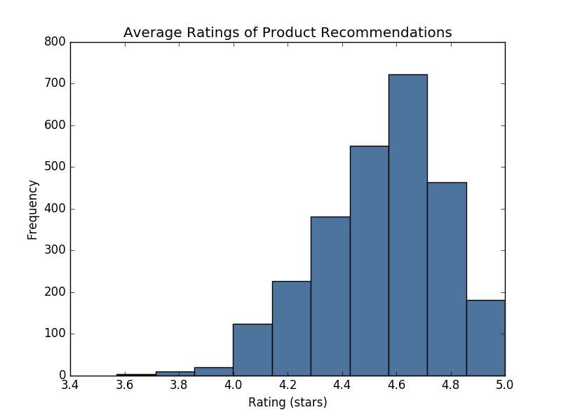

Overview & Motivation
Introduction
Development of recommender systems based on user ratings and reviews is an area of major research. We present and evaluate methods for implementing systems that can recommend books to users reliably and efficiently, through analyzing Amazon Kindle Store review data to understand what types of users correlate strongest with groups of products.
Features
- Recommend a list of books based on a user’s rating and review history
- Predict a user’s 5-star rating for any book
Datasets
- Amazon Kindle Store Ratings and Reviews: Includes ~1 million records of 5-star ratings, complete review text, timestamp, product ID, and user ID. Filtered to extract users and products that have at least five reviews each.
- Amazon Kindle Store Product Metadata: Includes product information such as name, price, sales rank, and items that were also bought and also viewed.
Recommending Previously Unseen Books
Method 1: User-based Collaborative Filtering
The collaborative filtering model inputs a user ID and identifies that user’s position in a similarity matrix comprising 5000 randomly sampled users from the original universe of Amazon kindle reviewers. Matrix entries correspond to the scores users assigned to products, and for a given input user, the model calculates the user-row’s cosine similarity to all other rows in the matrix. Finally, with the given user’s most similar users on hand, the model recommends items liked by those users for final consideration.
Method 2: Item-based Network Filtering
The related-products model considers all positively reviewed products that, according to Amazon metadata, were either also viewed or also purchased alongside any product positively reviewed by a given input user. These items are ordered by review positivity and recommended to the user.
Hybrid Model
The hybrid model outputs the intersection of the book lists generated by each model and orders them by their average score in the total dataset of Amazon kindle reviews, comprising almost 1,000,000 reviews.

Ratings Predictions
Text Analysis
The text from each user’s set of reviews can be used to generate the similarity matrix for the user-based collaborative filtering above. Then, the similarity matrix can be combined with one generated from the user ratings to improve the accuracy of identifying most similar users. For the text analysis we are using the following process:
- For each user, combine all review text into one block of text.
- Get counts of all words in each user’s text using a count vectorizer. Use standard English stop words, and remove HTML entities before calculating.
- Generate a utility matrix of users vs. word count vector.
- Calculate the TF-IDF scores for each word, and generate an updated utility matrix with these scores.
- Calculate the cosine similarity between each pair of users by comparing their vectors of TF-IDF scores.
- Create a sorted matrix, such that for each user, we can find their cohort of N most similar users.
Methods Considered
- Simple Average
- Ratings-based User-based collaborative filtering
- Review-based User-based collaborative filtering
- Matrix Factorization
Conclusions & Future Work
Conclusions
Improving on Simple Averaging for Kindle Ratings Predictions proved difficult. After investigating a range of models such as collaborative filtering and matrix factorization, we lowered RMSE by 3% from the Simple Averaging baseline. However the Netflix Challenge helps us frame the significance of this improvement: Netflix waited 3 years and paid $1mm for a 10% improvement from a model that wasn’t much better than Simple Averaging. Considering the sparsity of the dataset and the less-variability in ratings, difficulty in improving on RMSE is understandable.
While less quantifiably measurable, item recommendations proved more fruitful. Relying on item metadata and user-based collaborative filtering to make recommendations, we found considerable overlap among recommendations found using either strategy. While the user-based recommendation model was able to leverage common user opinions based on product ratings, the item-based model examined a the broader universe of available products. The intersection of these two strategies balances similarity based on reviews as well as the user’s broader genre preferences.
To evaluate the efficacy of the two strategies, we must consider the trade-off between the model’s ability to recommend novel items, and our ability to evaluate model performance. While the accuracy of the Simple Averaging model is easily quantifiable, the collaborative filtering methods are not.
Future Work
Computational efficiency: The Amazon Kindle dataset encodes information for ~62,000 users and ~68,000 products. Due to memory and processing constraints, all of our present models sample a small subset of this information. In order to increase the volume of information available to the model, we will need to encode this data using a sparse matrix representation and use matrix operations in our predictive calculations.
Integrating Text Analysis and User-based Collaborative Filtering: We are currently calculating user similarity matrices separately for the user-based collaborative filtering model and for the text analysis model. We’d like to create a model that combines these two approaches, and uses the similarity matrices from both models. For example, we could calculate the N most similar users from the text model, and the N most similar users from the collaborative filtering approach, and take the union of those two sets as the final similarity matrix. We can then test to see if this mixed model improves the accuracy of our rating predictions.
Machine Learning Approach: We haven’t yet tried implementing a machine learning based approach. The Stanford article on recommender systems (http://infolab.stanford.edu/~ullman/mmds/ch9.pdf ) suggested an approach involving creating a decision tree for each user, in which the predictors are attributes of the item as shown in the below diagram. In our case, we could use book attributes from the metadata dataset as the predictors.
Matrix Factorization: Given the size of our dataset, speed is a consideration for our predictive models. Matrix Factorization is a relatively quick model that works well with this sort of recommendation problem. This would be a good initial enhancement from our baseline models.